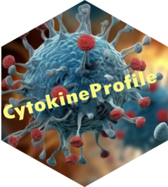

Running the CytokineProfile Shiny App Locally
Source:vignettes/R-installation.Rmd
R-installation.RmdOverview
This guide shows how to install the CytokineProfileShinyApp package from GitHub and launch the Shiny app locally. Please make sure to have at least R Version 4.3 or greater installed.
The package now includes the app runtime, and the supported
local-user launch path is
CytokineProfileShinyApp::run_app().
1. Install pak
Run the following line in the R console if pak is not
already installed:
if (!requireNamespace("pak", quietly = TRUE)) install.packages("pak")2. Install the package from GitHub
Install the package directly from GitHub with:
pak::pak("saraswatsh/CytokineProfileShinyApp")pak will resolve and install the package dependencies,
including Bioconductor dependencies required by the app.
4. Optional note for developers using a local repository checkout
If you are developing from a checked-out copy of the repository, you can still run the app from the project root with:
shiny::runApp(".")In that workflow, the root app.R file remains a
development entrypoint, but it is not the primary end-user launch
path.
Last updated: March 22, 2026